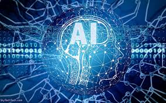

مقدمة
يُعد الذكاء الاصطناعي (AI) من أكثر المجالات التقنية تطورًا وتأثيرًا في العصر الحديث، حيث يُستخدم في مختلف الصناعات والتطبيقات لتحسين الكفاءة واتخاذ القرارات الذكية. يعتمد الذكاء الاصطناعي على تقنيات متقدمة مثل التعلم الآلي، والشبكات العصبية، ومعالجة اللغة الطبيعية، مما يسمح للآلات بأداء مهام تشبه الذكاء البشري.
مفاهيم وأساسيات الذكاء الاصطناعي
الذكاء الاصطناعي هو فرع من فروع علوم الحاسب يهدف إلى تطوير أنظمة قادرة على محاكاة الذكاء البشري وأداء المهام التي تتطلب تفكيرًا منطقيًا وتحليليًا. يشمل ذلك التعلم الآلي، معالجة اللغات الطبيعية، والرؤية الحاسوبية، مما يتيح للآلات فهم وتحليل البيانات واتخاذ قرارات دقيقة.
تعريف الذكاء الاصطناعي
الذكاء الاصطناعي هو فرع من علوم الحاسوب يهدف إلى تطوير أنظمة وبرامج قادرة على محاكاة القدرات الذهنية البشرية، مثل التعلم، والاستنتاج، واتخاذ القرارات، والتفاعل مع البيئة المحيطة. يتراوح تطبيق الذكاء الاصطناعي من الروبوتات الذكية إلى تحليل البيانات الضخمة.

تاريخ وتطور الذكاء الاصطناعي
بدأ الذكاء الاصطناعي في خمسينيات القرن الماضي وشهد تطورات كبيرة مع تقدم الحوسبة.
مجالات الذكاء الاصطناعي
- التعلم الآلي (Machine Learning - ML):يستخدم خوارزميات لتحليل البيانات والتعلم منها واتخاذ قرارات بناءً على الأنماط المستخرجة، مثل أنظمة التوصية وتحليل البيانات الضخمة.
- الشبكات العصبية والتعلم العميق (Neural Networks and Deep Learning):تقليد عمل الدماغ البشري باستخدام طبقات متعددة من الشبكات العصبية الاصطناعية، ويستخدم في التعرف على الصور والصوت ومعالجة اللغة الطبيعية.
- معالجة اللغة الطبيعية (Natural Language Processing - NLP):تمكين الآلات من فهم اللغة البشرية وتحليلها، مثل تطبيقات الترجمة الآلية، والمساعدات الافتراضية (مثل ChatGPT)، وتحليل المشاعر.
- رؤية الكمبيوتر (Computer Vision):تمكين الأجهزة من تحليل وفهم الصور ومقاطع الفيديو، مثل التعرف على الوجوه، وتحليل الصور الطبية، والمركبات ذاتية القيادة.
- الأنظمة الخبيرة (Expert Systems):برامج تحاكي خبرة البشر في مجالات معينة مثل التشخيص الطبي، والاستشارات القانونية، واتخاذ القرارات في الشركات.
- الروبوتات الذكية (Intelligent Robotics):تطوير روبوتات قادرة على التفاعل مع البشر وأداء مهام معقدة، مثل روبوتات المصانع، والمساعدين المنزليين، والروبوتات الطبية.
انواع الذكاء الصطناعي
- الذكاء الاصطناعي الضيق: وهو الذكاء الذي يُستخدم لتنفيذ مهام محددة، مثل التعرف على الوجوه والمساعدين الافتراضيين.
- الذكاء الاصطناعي العام: وهو النوع الذي يستطيع محاكاة التفكير البشري في مختلف المجالات واتخاذ قرارات بناءً على تجارب سابقة.
- الذكاء الاصطناعي الفائق: وهو مستوى متقدم قد يفوق الذكاء البشري في المستقبل، حيث يمكنه التعلم والتطور بشكل مستقل.
تطبيقات الذكاء الاصطناعي والاعتبارات الأخلاقية
يستخدم الذكاء الاصطناعي في الصحة، الصناعة، والأمن، لكنه يتطلب مراعاة القضايا الأخلاقية.

أهمية الذكاء الاصطناعي في المجتمع
يساهم الذكاء الاصطناعي في تحسين الإنتاجية، الابتكار، وتقديم حلول لمشاكل معقدة.

أمثلة على استخدام الذكاء الاصطناعي
تتضمن الأمثلة المساعدات الصوتية، السيارات ذاتية القيادة، والتشخيص الطبي.
الأخلاقيات واللوائح في استخدام الذكاء الاصطناعي
يجب وضع معايير لضمان الشفافية وعدم التحيز في تطبيقات الذكاء الاصطناعي.
التأثير على التوظيف والعمل المستقبلي
يغير الذكاء الاصطناعي سوق العمل من خلال الأتمتة والوظائف الجديدة.

مجالات النمو والتطور في الذكاء الاصطناعي
يتطور الذكاء الاصطناعي في مجالات مثل الروبوتات، تحليل البيانات، والذكاء الاصطناعي التوليدي.
خاتمة
الذكاء الاصطناعي يُعد ثورة تكنولوجية تسهم في تحسين جودة الحياة وتطوير مختلف القطاعات، لكنه يحتاج إلى تطوير مستمر ومعالجة القضايا المرتبطة به لضمان استخدامه بشكل آمن وأخلاقي.
